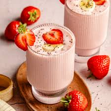

recipe page
smoothie
Home

Strawberry Banana Smoothie
This classic Strawberry Banana Smoothie is creamy, naturally sweet, and ready in just five minutes.
With just four simple ingredients—frozen fruit, milk,
and yogurt—it delivers the perfect balance of fruity flavor and velvety texture.
It's a foolproof favorite for a quick breakfast or a healthy snack.
Ingredients
- 1 cup frozen strawberries
- 1 ripe banana (fresh or frozen)
- ½ cup plain or vanilla yogurt (Greek or regular)
- ½ cup milk (dairy or any non-dairy alternative)
- 1 teaspoon honey or maple syrup (optional, if you like it sweeter)
Steps
- Combine: Place the frozen strawberries, banana, yogurt, and milk into a blender.
- Blend: Blend on high until the mixture is completely smooth and creamy. If it's too thick, add a splash more milk until it reaches your desired consistency.
- Taste: Give it a taste and add honey or maple syrup if you prefer a sweeter smoothie. Blend again briefly to combine.
- Serve: Pour into a glass and enjoy immediately.